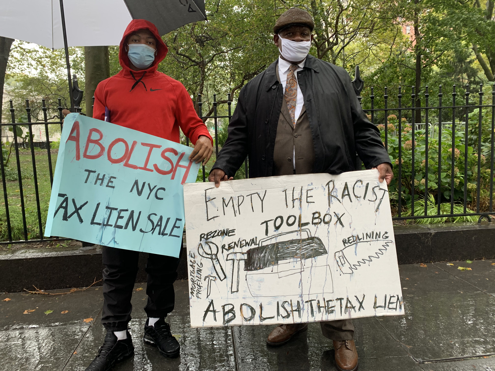

CITY'S TAX LIEN SALE HITS BROOKLYN NEIGHBORHOODS OF COLOR HARD
By Jeff Winter
November 2, 2020
Every year the city's Department of Finance sells unpaid municipal debts, or liens, to third-party purchasers. This year's sale is currently scheduled for Nov. 4.
"There are many neighborhoods in New York City where working-class homeowners have been able to buy homes and thrive. The tax lien sale is one of the many forces threatening to destabilize these neighborhoods, and liens are more likely to be sold in majority Black and majority Latinx neighborhoods than majority white neighborhoods," said Ivy Perez, policy and research manager at the Center for NYC Neighborhoods.
Brooklyn has more eligible liens in this week's sale than any borough, and many of those liens are concentrated in neighborhoods of color.
The three Brooklyn neighborhoods with the most liens – community boards 3, 5, and 17 – are also at least 50% Black, according to City Planning data.